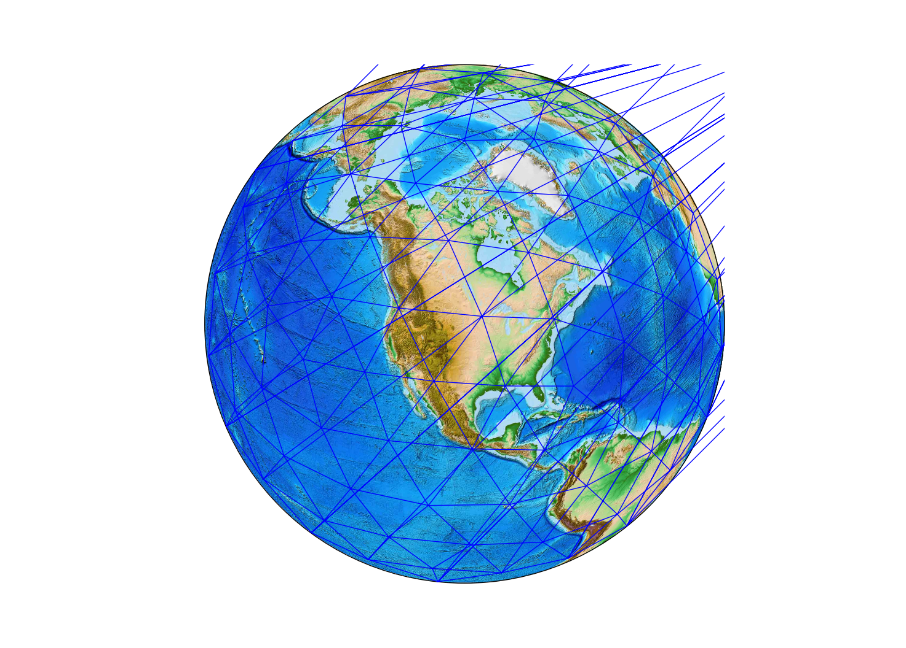

Load a grid¶
Grids are made using a Java utility called GeoTessBuilder. Loading them into
memory from file is the standard constructor in PyGeoTess. Viewing grid metadata is as simple as using print or str.
from geotess import Grid
grid = Grid('geotess/data/geotess_grid_16000.geotess')
print(grid)
GeoTessGrid
gridID = 4FD3D72E55EFA8E13CA096B4C8795F03
memory : 0.11776 MB
input Grid File : geotess/data/geotess_grid_16000.geotess
generated by software version : GridBuilder 0.0.0 Fri May 25 11:34:59 MDT 2012
nTessellations = 1
nLevels = 3
nVertices = 162
nTriangles = 420
Tess Level LevelID NTri First Last+1
0 0 0 20 0 20
0 1 1 80 20 100
0 2 2 320 100 420
Built-in grids¶
The grids and models that GeoTess distributes are also part of PyGeoTess. The files are found in geotess/data, but they are also pre-loaded into class instances. Here, we simply import the previous grid.
from geotess.data import grid_16000
print(grid_16000)
GeoTessGrid
gridID = 4FD3D72E55EFA8E13CA096B4C8795F03
memory : 0.11776 MB
input Grid File : geotess/data/geotess_grid_16000.geotess
generated by software version : GridBuilder 0.0.0 Fri May 25 11:34:59 MDT 2012
nTessellations = 1
nLevels = 3
nVertices = 162
nTriangles = 420
Tess Level LevelID NTri First Last+1
0 0 0 20 0 20
0 1 1 80 20 100
0 2 2 320 100 420
Vertices and triangles¶
In PyGeoTess, Grid vertices are geocentric coordinates of points of intersection on a tessellation, and triangles are the three integer vertex indices that form a triangle in the tessellation. For a given grid, all vertices are accessible via the Grid.vertices method, and the triangles (vertex associations) for a particular tessellation and level are gotten with the Grid.triangles method.
vertices = grid.vertices()
triangles = grid.triangles(tess=0, level=2)
print("The first 10 vertices are:\n{}".format(vertices[:10]))
print("The first 10 triangles are:\n{}".format(triangles[:10]))
The first 10 vertices are:
[[ 0. 90. ]
[ 72. 26.71930078]
[ 0. 26.71930078]
[ 144. 26.71930078]
[-144. 26.71930078]
[ -72. 26.71930078]
[ 36. -26.71930078]
[ 108. -26.71930078]
[-180. -26.71930078]
[-108. -26.71930078]]
The first 10 triangles are:
[[42 43 44]
[12 44 43]
[13 42 44]
[14 43 42]
[42 45 46]
[ 0 46 45]
[14 42 46]
[13 45 42]
[43 47 48]
[ 1 48 47]]
Plotting grids¶
The .vertices and .triangles methods above return arrays that are amenable
to plotting using Matplotlib's
triplot
function. We'll project first using Matplotlib
Basemap.
import matplotlib.pyplot as plt
from mpl_toolkits.basemap import Basemap
m = Basemap(projection='ortho',lat_0=45,lon_0=-100)
m.etopo()
x, y = m(vertices[:,0], vertices[:,1])
plt.triplot(vertices[:,0], vertices[:,1], triangles);

The cirularity of vertex longitudes makes plotting a bit wonky. Luckily,
Matplotlib has the tools
Triangulation
and
TriAnalyzer
to mask out these long, flat triangles from the plot.
from matplotlib.tri import Triangulation, TriAnalyzer
tri = Triangulation(x, y, triangles)
tri_an = TriAnalyzer(tri)
mask = tri_an.get_flat_tri_mask()
plt.triplot(x, y, triangles, mask=mask)
Not perfect, but not as messy.